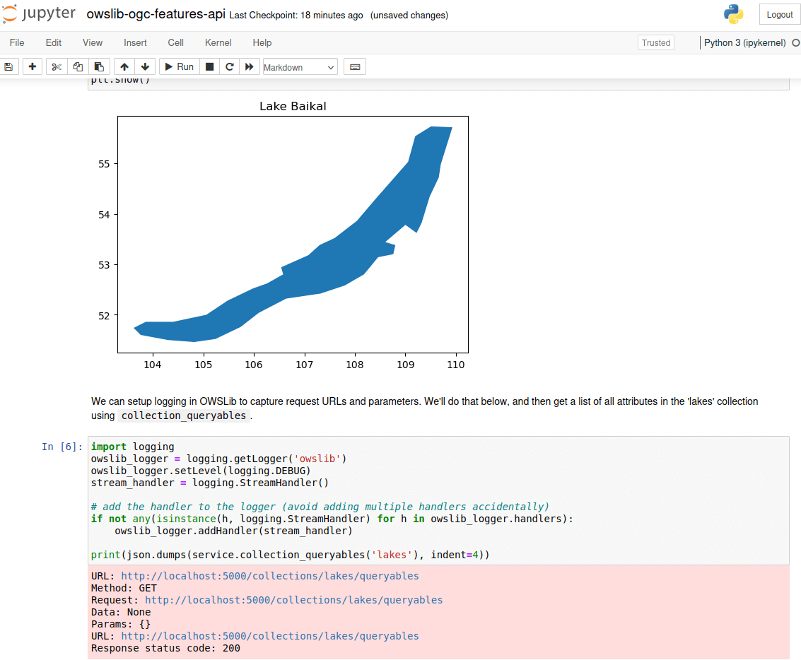

OWSLib¶
Open Geospatial Web Services Library¶
OWSLib is a Python package for client programming with Open Geospatial Consortium (OGC) web service (hence OWS) interface standards, and their related content models.
OWSLib is Open Source, released under an BSD 3-Clause License, and runs on any platform that supports Python (Windows, Linux, Mac OS X).
{kind=link}
Core Features¶
easily connect to WMS, WFS, WCS, WPS, CSW services using Python (and many more)
support for the new OGC APIs
easy to install with
pip3 install OWSLibalso available with Conda, and as a Debian package
detailed log output
support for proxies
Implemented Standards¶
OGC Standards¶
Standard |
Version(s) |
Standard |
Version(s) |
|---|---|---|---|
1.1.1, 1.3.0 |
1.0.0, 1.1.0, 2.0.0, 3.0 |
||
1.0.0, 1.1.0, 2.0, 2.0.1 |
1.1.0 |
||
1.0.0, 2.0.0 |
1.0.1 |
||
2.0.2 |
1.0.0 |
||
1.1.0 |
1.0.0, 1.1.0, 2.0 |
||
1.0.0 (alpha) |
9.7 |
||
1998 |
2007 |
||
2012 |
1.1 |
||
2.3 |
1.0.0 |
||
1.0, 1.1, 2.0 |
1.1 |
OGC API Support¶
Standard |
Version |
Standard |
Version |
|---|---|---|---|
1.0 |
draft |
||
draft |
1.0 |
||
OGC API - Features - Part 4: Create, Replace, Update and Delete |
draft |
draft |
|
draft |
draft |
Details¶
Website: https://owslib.readthedocs.io/
Licence: BSD 3-Clause License
Software Version: 0.33.0
Supported Platforms: Windows, Linux, Mac
API Interfaces: Python
Support: OSGeo service providers